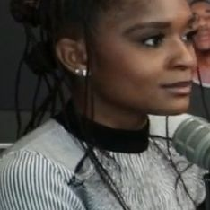

あらすじネタバレあり
あらすじを読む（結末までのネタバレを含みます）
1. 大学を追われる
リリは、アーマーの研究が問題になり、大学を追い出される。
2. シカゴ
ふるさとに戻ったリリは、お金に困る。
3. フッドの仲間
リリは、パーカーの泥棒の仲間に加わる。
4. 仲間割れ
リリは、フッドの危険さに気づく。
5. 最後の取り引き
リリは、大切な人を取り戻すため、ある取り引きに向き合う。
作品ガイド · 2025
映画だけでは分かりにくいところを、あらすじ・相関図・用語でやさしく解説します。
リリは『ブラックパンサー／ワカンダ・フォーエバー』で初めて登場しました。
科学の天才リリと、魔法の力を持つフッドがぶつかる物語です。
最後に、ある大物が登場します。
リリを中心に、『アイアンハート』（2025年）に登場する人物の関係をまとめました。
※著作権の関係で、映画の場面写真やポスターなど、映画に出てくる姿の写真は使えません。顔写真はすべて、自由に使ってよい許可のある俳優本人の写真です（人間でないキャラクターはこのサイトで作ったイラスト、写真が見つからなかった人物は頭文字のアイコン）。
ドラッグで移動、ピンチ（PCはホイール）で拡大・縮小。人物をタップすると説明が開きます。

リリ・ウィリアムズ（アイアンハート）中心人物 ・ ドミニク・ソーン天才発明家顔写真は、Wikimedia Commons にある俳優本人の写真（自由に使えるライセンスのもの）を、正方形に切り抜いて縮小し、使っています。人間でないキャラクターはこのサイトで作ったイラスト、写真のない人物は仮のアイコン（名前の頭文字）です。
リリは、アーマーの研究が問題になり、大学を追い出される。
ふるさとに戻ったリリは、お金に困る。
リリは、パーカーの泥棒の仲間に加わる。
リリは、フッドの危険さに気づく。
リリは、大切な人を取り戻すため、ある取り引きに向き合う。
結末に関わる内容を含みます。
パーカーのマントは、悪魔のような存在とのつながりから力を得ていました。
リリの親友で、事件に巻きこまれて亡くなった少女です。リリは、彼女をもとにアーマーの人工知能を作りました。
最終話で、悪魔の王メフィストが姿を現し、リリに取り引きを持ちかけます。
リリのふるさとシカゴの町並みが、物語のあちこちに出てきます。
リリは、アーマーを何度も作り直し、改良していきます。
ドゥームズデイに関わる情報はない。